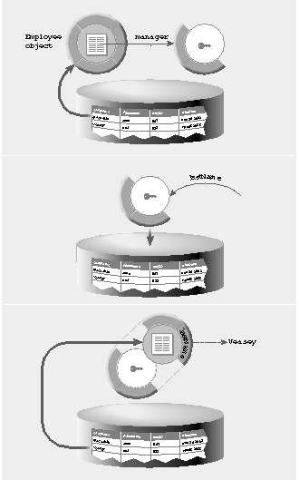

Enterprise Objects Framework Release 1.1 Copyright ©1995 by NeXT Computer, Inc. All Rights Reserved.
| 2 |
From Database to Objects
| Chapter 1, "Enterprise Objects Framework Overview" described the Enterprise Objects Framework at a fairly high level, presenting the components of the Framework and introducing the term enterprise object. This chapter describes how the Framework's access layer creates enterprise objects from a relational database, and how it propagates changes made to those objects back to the database. Understanding these processes allows you to fully exploit the power of the Framework's database level, and provides you with an example for creating other sources of enterprise objects (such as a flat-file database or real-time data feed). |
| Rows as Dictionaries |
| The first step toward full object-oriented access to a relational database is the creation of an abstract interface that works with any relational database. Every relational database has its own client library interface for retrieving data from the server, each with vastly different data structures and means for accessing them. This makes client applications highly dependent on the database, and the low level of abstraction typical of such interfaces makes it difficult to create and port applications based on them.
The Enterprise Objects Framework uses adaptors to abstract these different interfaces into one simple interface, defined by the Framework's adaptor level. The "bottom end" of an adaptor uses the interfaces specific to the database it was created for, and the interface that the adaptor exports to the client application is the same as that for all other adaptors. An adaptor is typically packaged as a bundle that your application loads as needed, and that contains the database-specific subclasses of the generic adaptor classes, a login panel, and other resources needed for communication with the database. An adaptor presents database rows in the form of NSDictionary objects. The elements of the dictionary correspond to columns (attributes) in the database table: Their names are the names of the attributes as used by the client application, and their values are the values in the database. The mapping between attributes and columns is made by an application's model, as described in Chapter 1, "Enterprise Objects Framework Overview." When data is retrieved from the database, the values are converted from their database-specific types to instances of these standard value classes: |
| NSString, for character strings | ||
| NSCalendarDate, for calendar dates and times | ||
| NSNumber, for all scalar numbers (integer or floating-point) | ||
| NSData, for arbitrary binary data (commonly referred to as BLOBs) |
| You can augment this set by defining custom value classes associated with columns that contain character strings or binary data. See the EOCustomValues and EODatabaseCustomValues protocol specifications in the Enterprise Objects Framework Reference for more information.
Note: NULL values in the database are represented by instances of a special class, EONull. EONull objects can appear in the place of instances of any of the other value classes when you fetch data. The abstraction provided by the Framework's adaptor level is a powerful first step toward an object-oriented interface, but it's only a first step. NSDictionary objects offer no means for adding customized behavior, such as validation of data or automatic propagation of updates. Relationships between rows, such as that between employees and the departments they work in, aren't reflected in any way other than by matching values in dictionaries; to resolve a relationship you have to determine the attributes defining it and use the values of those attributes to fetch the related rows. Further, each time you retrieve a row from a database, you get a new NSDictionary--there's no facility for determining if the row has already been fetched and exists in memory. To support these features, the Enterprise Objects Framework adds another level on top of the adaptor level. This is the database level. |
| Creation of an Enterprise Object |
| The database level is the subsystem of the Enterprise Objects Framework responsible for creating enterprise objects from a relational database. When you ask an EODatabaseChannel to fetch an object from the database, it uses the adaptor level to get the dictionary for the corresponding row and creates an enterprise object from that dictionary. In addition to passing this data to the new enterprise object, the database level resolves the object's relationships by creating, but not immediately fetching data for, the destination objects of those relationships. The database level also checks whether an enterprise object with the same primary key already exists in memory before allocating a new one.
You retrieve enterprise objects with an EODatabaseChannel in two major steps. First, you select the rows in the database for which you want to retrieve objects. In doing so, you specify the entity for which you want to retrieve data, and this entity in turn specifies which enterprise object class is instantiated for every object created. Second, you use a loop to fetch each enterprise object, one at a time (see Chapter 8, "Retrieving Records" for a detailed presentation of this procedure). The basic sequence of events in creating an enterprise object from a relational database is this: |
| 1. | The EODatabaseChannel uses its EOAdaptorChannel to fetch a dictionary representing a row in the database. This dictionary contains values only for attributes defined in the model; it doesn't contain references to the destination rows of relationships. | |
| 2. | The database channel examines the entity you selected to determine the value of the primary key for the row just retrieved. | |
| 3. | The database channel creates or finds an enterprise object for the fetched data. It does so either by finding a uniqued enterprise object and using that, or by allocating a new instance of the enterprise object class for the selected entity. | |
| If the channel's EODatabase is configured to perform uniquing of enterprise objects (described below in "Uniquing"), it checks the primary key just retrieved against all enterprise objects its channel has created so far. If an object already exists for the selected entity and the primary key, the database channel uses the existing object in the remaining steps. If an object doesn't already exist, the database channel allocates an instance of the appropriate class. | ||
| 4. | The database channel initializes a newly created enterprise object. If the object responds to initWithPrimaryKey:entity:, the database channel sends that message with the selected entity and the primary key. Otherwise it merely sends init. | |
| 5. | The channel's EODatabaseContext records a snapshot of the fetched data under the id of the enterprise object. If configured to do so, the channel's EODatabase object also records a snapshot. Snapshots are used when updating objects, as described in "Update Strategies, Snapshots, and Transactions." | |
| 6. | The database channel examines the entity for relationships, and constructs or finds a stand-in object (called a "fault") for each of those relationships. The stand-in objects are added to the dictionary of attributes retrieved by the adaptor level. See "Delayed Resolution of Relationships" below for more information on resolution of relationships. | |
| 7. | The database channel assigns the enterprise object the values in the dictionary by sending it a takeValuesFromDictionary: message. takeValuesFromDictionary: is defined by the EOKeyValueCoding informal protocol, which is the standard interface for accessing an enterprise object's data values. Note that the database channel always sends this message, even to an enterprise object that was previously created. | |
| 8. | If the enterprise object responds to awakeForDatabaseChannel:, the database channel sends it that message, allowing it to perform any additional initialization needed. The enterprise object is now completely initialized, and is returned to the sender of the fetch message. |
| This outline leaves out a number of peripheral steps, such as handling of error conditions (for example, no transaction in progress), invocation of delegate messages, and handling of faults. Issues such as error conditions and delegate messages are explained in appropriate parts of the Enterprise Objects Framework Reference. Other issues are described in the following sections.
Delayed Resolution of Relationships One of the most powerful and useful features of the Framework's database level is that it automatically resolves the relationships defined in a model. It does so by delaying the actual retrieval of data--and communication with the database--until the data is needed. This delayed resolution of relationships occurs in two stages: the creation of a placeholder object for the data to be fetched, and the fetching of that data only when it's needed. When the database level fetches an object, it examines the relationships defined in the model and creates objects representing the destinations of the fetched object's relationships. For example, if you fetch an employee object, you can ask for its manager and immediately receive an object; you don't have to get the manager's employee ID from the object you just fetched and fetch the manager yourself. The database level doesn't immediately fetch data for the destination objects of relationships, however. Fetching is fairly expensive, and further, if the database level fetched objects related to the one explicitly asked for, it would also have to fetch the objects related to those, and so on, until all of the interrelated rows in the database had been retrieved. To avoid this waste of time and resources, the destination objects created are stand-ins, of a special class whose instances transform themselves into actual enterprise objects--and fetch their data--the first time they're accessed. These stand-ins are called fault objects, and come in two varieties: single-object faults for to-one relationships, and array faults for to-many relationships. A fault object occupies the same amount of memory as an instance of the target class (which it's eventually transformed into), and stores the information needed to retrieve the data associated with the fault (the values of the keys defining the relationship for a single-object fault, a qualifier describing enterprise objects for an array fault). A fault object thus consumes some memory in your application, but never consumes more resources than a near-empty instance of its target class. |
|  |
| Figure 10. Resolution of a Fault Object
A fault object behaves in every way possible as an instance of its target class until it receives a message it can't cover for. For example, if you fetch an Employee object and ask for its manager, you get a fault object representing another Employee object. If you send a class message to this fault object, it returns the Employee class. If you send the fault object a message requesting the value of an attribute, such as lastName, however, it uses the database channel that created it to retrieve its data from the database, overwrites its class identity, and invokes the target class's implementation of lastName. Figure 10 illustrates this process. In the top panel, an Employee object, Jane MacAskill, is fetched from the database. Every employee has a manager, and Jane's is Kai Veasey. Instead of fetching Kai's data right away, the database channel creates a fault object containing the value of the foreign key for Jane's toManager relationship (in this case the value is Kai's employee ID). The graphic for the fault object has an empty center with a key in it, indicating that it contains no real values yet. The bottom half of the object shows the messages that the fault object can respond to without having to fetch its data, such as class, retain, and release. The other half of the object's outside is missing, however, showing a "tender area" that a message such a lastName hits (in the middle panel). This causes the fault object to fetch its data from the database, overwrite its identity to become an Employee object, and invoke Employee's implementation of lastName, returning "Veasey" (in the bottom panel). The process of resolving an array fault is similar, except that many enterprise objects may be fetched instead of only one. Array faults behave as instances of the NSArray class, and are triggered by any request for a member object or for the number of objects in the array (the number of objects for a to-many relationship can't be determined without actually fetching them all). Note that a fault object has to use a database channel to fetch its data. Because a database channel can't perform more than one fetch operation at the same time, you should be careful about accessing fault objects in your code. If, during a fetch operation, you need to access an object you've determined is a fault, you have to either cancel the fetch, access the fault, and resume, or get the fault object's qualifier and fetch the fault explicitly with a separate channel. See Chapter 8, "Retrieving Records" for a detailed presentation of the procedure for fetching an object. For more information on faults, see the EOFault class specification in the Enterprise Objects Framework Reference.
Uniquing In marrying relational databases to object-oriented programming, one of the key requirements is that a row in the database be associated with only one object in the application. Uniquing of enterprise objects limits memory usage, prevents redundant storage, and allows you to know with confidence that the object you're interacting with represents the true state of its associated row as it was last fetched by your application. Without uniquing, you get a new enterprise object every time you fetch its corresponding row, whether explicitly or through resolution of relationships. The top panel of Figure 11 shows the enterprise objects that exist after fetching three employee objects without uniquing. Kai is Cary's and John's manager. On fetching an object for Cary, an object representing Kai is created to resolve the manager relationship. If you then fetch an object for Kai, a separate object is created. Fetching an object for John then causes yet another object representing Kai to be created. |
| Figure 11. Uniquing of Enterprise Objects
Kai's row in the database can be altered between any of these individual fetches, resulting in objects representing the same row, but with different data. Contrast this situation with the bottom panel, where uniquing results in only one object ever being created for Kai. In this case, even though Kai's row can be changed, your application has a single view of Kai's data. The data may not reflect what's in the database if another use changes it, but there's no ambiguity within your application. The database level performs uniquing of enterprise objects by default, but you can turn this behavior off if you need to. You might do this if you need to implement your own uniquing scheme or customize the one provided in some way. See the EODatabase class specification in the Enterprise Objects Framework Reference for more information.
Uniquing and Fault Objects When a database channel that's configured to perform uniquing constructs a fault for a to-one relationship, it checks the primary key for the destination to see whether that object already exists. If so, it simply uses that object to immediately resolve the relationship. This preserves the uniqueness requirement for enterprise objects, in that there's never more than one id representing the same row in the database. Whether that id represents an actual enterprise object or a fault doesn't matter, since the data will be fetched when it's needed. Similarly, if a database channel fetches data for an object that's already been created as a fault, the database channel turns the fault into an instance of its target class, without changing the id, and simply initializes the resulting enterprise object as described in step 4 of the process for creating enterprise objects (described in "Creation of an Enterprise Object"). The process is essentially the same whether you fetch the fault's data or whether the fault fetches the data itself upon being sent a message. |
| Modifying an Enterprise Object |
| Many applications change the data for enterprise objects they read from a database. An application can modify enterprise objects in three ways: It can delete an existing object, create and insert a new object into the database, or update an existing object's data. It can also modify enterprise objects in ways that don't affect their stored data, but such changes aren't relevant to the database.
Deletion and insertion are straightforward operations, requiring you to send only a single message (deleteObject: or insertObject:) to a database channel. The process of deleting an object entails removing its corresponding row from the database, clearing the information cached when it was fetched, and releasing the object. Inserting a new object combines the creation of a row in the database with the recording of all information normally cached upon fetching an existing row. (See Chapter 9, "Inserting, Deleting, and Updating Records" for programming procedures.) Either operation fails under simple circumstances: Deletion fails if the row to delete doesn't exist (for example, if someone else already deleted it), and insertion fails if a row already exists with the same primary key as the row to insert. Updating only requires you to send one message as well (updateObject:), but it can fail under more complex circumstances, since an update involves changing a row that already exists and that someone else may be examining or modifying independently. To handle the problems that can arise when updating objects, the database level offers a set of update strategies, which use the snapshots recorded during fetching.
Update Strategies, Snapshots, and Transactions The basic ingredients of an update operation are an enterprise object whose data values have been changed, a means of identifying the row in the database that corresponds to the object, and a strategy for handling update conflicts if someone else is trying to update the same row. There must also be a transaction in progress. The "means of identifying" a row is called a snapshot, which is a dictionary object recording a row's primary key and the attributes of that object that are used for locking during an update. (Primary keys and attributes used for locking are defined in a model; see Chapter 5, "Using EOModeler" for more information.) Because even the primary key of an enterprise object can change, snapshots are required to identify the row for updating. A snapshot is recorded under the id of its enterprise object whenever the object is fetched or modified. An update strategy determines how updates should be made in the face of changes by others. For example, one strategy is to lock a row so that no one else can change it until you're done with it; this is called pessimistic locking. Another strategy is to save the state of a row as you fetched it--this is the snapshot--then compare the row with the snapshot at update time to see if it's still the same; this is called optimistic locking, because it assumes the row won't be changed, but does check at the last minute. You can also overwrite a row without even checking--called updating with no locking or a "blind" update. Finally, you can declare that you won't be updating at all, so that snapshots don't have to be kept, which saves system resources. An update must take place within the context of a transaction; thus, snapshots and update strategies are naturally linked with transactions. A snapshot represents the latest known state of a database row within a transaction context; different transaction contexts can have different views of the same row. Similarly, an update strategy applies uniformly to all updates performed within a transaction context. Because the EODatabaseContext class manages transactions, it also manages snapshots and update strategies. An EODatabaseContext always records snapshots for any objects fetched, inserted, or updated during a transaction (unless the no-update policy is in effect). If it begins a transaction within another transaction (called a nested transaction), it creates a separate set of snapshots. When a nested transaction is committed, the snapshots made while it was in progress are folded into the higher-level transaction, replacing any snapshots made before the changes took effect. When the top-level transaction is committed, the database context's transactions are folded into the snapshots kept by the EODatabase object associated with the database context. An EODatabase normally keeps snapshots for all enterprise objects fetched or inserted by any of its channels--a practice that can consume a lot of memory. You can turn off snapshotting in the EODatabase to save that memory, but if you do, snapshots don't survive top-level transactions. Because a top-level transaction's snapshots can't be folded back to the EODatabase, you won't be able to update objects unless you first fetch them in a transaction to create a snapshot in the database context. For more information on using update strategies and snapshots, see the EODatabaseContext class specification in the Enterprise Objects Framework Reference.
Updating an Enterprise Object To update an enterprise object, all you normally have to do is start a transaction and send an updateObject: message to an EODatabaseChannel. If you've turned snapshotting off in the EODatabase object, you have to fetch the object before updating it to be sure a snapshot exists. If you leave snapshotting enabled in the EODatabase, snapshots persist across transactions, so you can update objects that you haven't explicitly fetched within the current transaction. (See Chapter 9, "Inserting, Deleting, and Updating Records" for programming procedures.) This is the basic sequence of events in updating an enterprise object: |
| 1. | If you're using a pessimistic locking strategy, you have to fetch the row for the object you want to update so that it will be locked. You can also explicitly lock the object, regardless of the update strategy, by sending a lockObject: message to the EODatabaseChannel (lockObject: immediately returns a failure result for an already-locked object, so you can quickly determine whether to continue with the update). A locked object's row is unlocked when the transaction is committed or aborted. | |
| If you try to update an object that you haven't fetched or locked in the current transaction, the database level falls back to the optimistic locking strategy (which comes into play in step 4). | ||
| 2. | You send the updateObject: message to the EODatabaseChannel. | |
| 3. | The EODatabaseChannel asks its EODatabaseContext for the snapshot of the enterprise object you're updating. From the snapshot, it gets the object's original primary key, which it uses to identify the row to update. If the EODatabaseContext doesn't have a snapshot and the database channel's EODatabase doesn't keep snapshots, the update fails. | |
| 4. | If the optimistic locking strategy is in effect, the database channel fetches and locks the row from the database and compares the values retrieved with those in the snapshot. If any of these values differ from those in the snapshot--indicating that the row has been updated since it was last fetched--the update fails. | |
| 5. | The database channel constructs a dictionary object containing only the attribute values changed from the snapshot, plus the values for any attributes that aren't kept in snapshots (which have nothing to be compared against). | |
| 6. | The database channel uses its adaptor channel to update the row in the database with the dictionary of changed attribute values. | |
| 7. | If the update is successful, the database channel updates the snapshot for the enterprise object in its database context. |
| This outline of steps leaves out details such as delegate messages, error conditions, and so on. For information on these details, see the specifications of the database-level classes in the Enterprise Objects Framework Reference. |